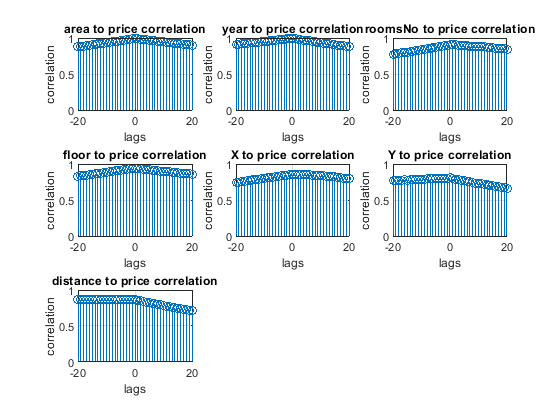
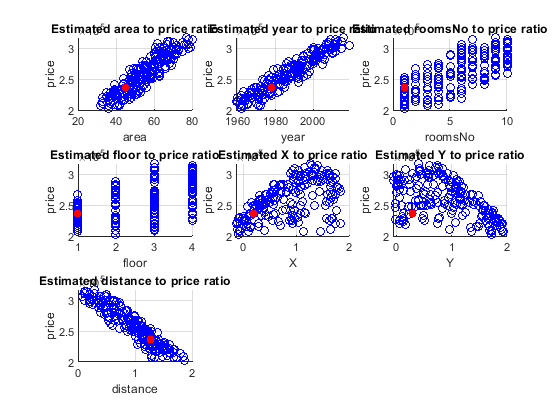
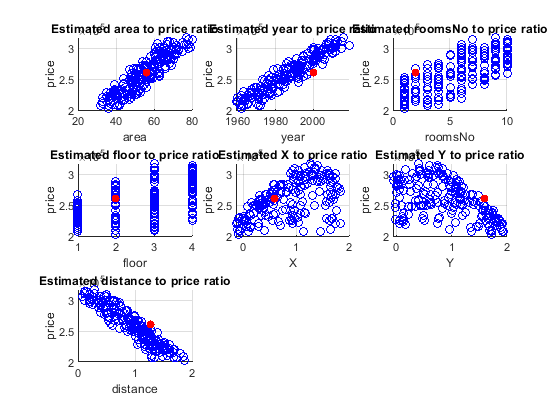
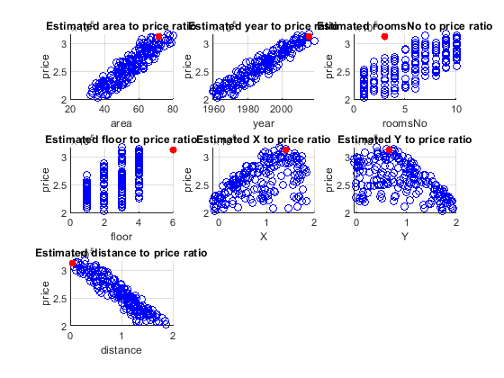

clc
clear
close all
format longG
data_to_estimate = [45 1978 1 1 0.2 0.3;
56 2000 2 2 0.6 1.6;
72 2016 3 6 1.4 0.65];
test_data = [36,1962,1,2,-0.0949103322753609,1.72061853694211;
39,1961,1,3,-0.0691434203045192,1.72883298748516;
48,1974,1,1,0.0268755476418518,0.111864124433479];
estimated_price(1,:) = estimate_price(data_to_estimate(1,:));
estimated_price(2,:) = estimate_price(data_to_estimate(2,:));
estimated_price(3,:) = estimate_price(data_to_estimate(3,:));
function price_house = estimate_price(house_params)
data = readtable('data2.xlsx');
data = table2array(data);
columnNames = ["price", "area", "year", "roomsNo", "floor", "X", "Y", "distance"];
price = data(:,1);
area = data(:,2);
year = data(:,3);
roomsNo = data(:,4);
floor = data(:,5);
X = data(:,6);
Y = data(:,7);
X_downtown = 1.43;
Y_downtown = 0.63;
P_downtown = [X_downtown, Y_downtown];
distance = zeros (length(data(:,1)),1);
for i=1:length(data(:,1))
distance(i) = sqrt((X_downtown - data(i,6))^2 + (Y_downtown - data(i,7))^2);
end
data = [data distance];
distance = data(:,8);
t = -20:20;
figure
for i=2:length(columnNames)
subplot(3,3,i-1)
r = xcorr(data(:,i), price, 20,'coeff');
stem(t, r);
title(columnNames(i) + ' to price correlation')
ylabel('correlation');
xlabel('lags')
grid on
end
idx_v = 1:4:length(price);
k = 0;
idx_t = zeros();
for i = 1:length(price)
tempIdx = find(idx_v == i,1);
if isempty(tempIdx)
k = k+1;
idx_t(k) = i;
end
end
[data_t] = [price(idx_t), area(idx_t), year(idx_t), roomsNo(idx_t), floor(idx_t), X(idx_t), Y(idx_t), distance(idx_t)];
[data_v] = [price(idx_v), area(idx_v), year(idx_v), roomsNo(idx_v), floor(idx_v), X(idx_v), Y(idx_v), distance(idx_v)];
inputX = data_t(:,[2 3 4 5 8]);
inputX = [ones(length(inputX),1) inputX];
outputY = data_t(:,1);
theta = (inputX' * inputX) \ inputX' * outputY;
display(theta)
estimatedPrice = zeros(length(data_t(:,1)),1);
for i=1:length(data_t(:,1))
estimatedPrice(i)= theta(1) + data_t(i,2) * theta(2) + data_t(i,3) * theta(3) + data_t(i,4) * theta(4) + data_t(i,5) * theta(5) + data_t(i,8) * theta(6);
end
estimated_data_t = [estimatedPrice data_t(:,2:6)];
SSE_t = 0;
SST_t = 0;
for i=1:length(estimated_data_t(:,1))
SSE_t = SSE_t + (estimated_data_t(i,1) - data_t(i,1))^2;
SST_t = SST_t + (estimated_data_t(i,1) - mean(data_t(:,1)))^2;
end
R_squared_t = 1 - SSE_t/SST_t;
display(SSE_t)
display(R_squared_t)
estimatedPrice = zeros(length(data_v(:,1)),1);
for i=1:length(data_v(:,1))
estimatedPrice(i)= theta(1) + data_v(i,2) * theta(2) + data_v(i,3) * theta(3) + data_v(i,4) * theta(4) + data_v(i,5) * theta(5) + data_v(i,8) * theta(6);
end
estimated_data_v = [estimatedPrice data_v(:,2:6)];
SSE_v = 0;
SST_v = 0;
for i=1:length(estimated_data_v(:,1))
SSE_v = SSE_v + (estimated_data_v(i,1) - data_v(i,1))^2;
SST_v = SST_v + (estimated_data_v(i,1) - mean(data_v(:,1)))^2;
end
R_squared_v = 1 - SSE_v/SST_v;
display(SSE_v)
display(R_squared_v)
distance_1 = zeros (length(house_params(:,1)),1);
for i=1:length(house_params(:,1))
distance_1(i) = sqrt((X_downtown - house_params(i,5))^2 + (Y_downtown - house_params(i,6))^2);
end
house_params = [house_params distance_1];
price_house = theta(1) + house_params(1) * theta(2) + house_params(2) * theta(3) + house_params(3) * theta(4) + house_params(4) * theta(5) + house_params(7) * theta(6);
display(price_house)
figure
for i=2:length(columnNames)
subplot(3,3,i-1)
hold on
scatter(data(:,i), price, 'b')
scatter(house_params(:,i-1), price_house,'filled', 'r')
hold off
title('Estimated ' + columnNames(i) + ' to price ratio')
ylabel(columnNames(1));
xlabel(columnNames(i))
grid on
end
end
Warning: Column headers from the file were modified to make them valid MATLAB
identifiers before creating variable names for the table. The original column
headers are saved in the VariableDescriptions property.
Set 'PreserveVariableNames' to true to use the original column headers as table
variable names.
theta =
-1502795.62569074
436.755598271644
883.833944873516
568.098118302894
293.254850524371
-23469.2233871528
SSE_t =
8929292747.91828
R_squared_t =
0.928984355228418
SSE_v =
3349058458.69207
R_squared_v =
0.917829708990228
price_house =
236055.236909125
Warning: Column headers from the file were modified to make them valid MATLAB
identifiers before creating variable names for the table. The original column
headers are saved in the VariableDescriptions property.
Set 'PreserveVariableNames' to true to use the original column headers as table
variable names.
theta =
-1502795.62569074
436.755598271644
883.833944873516
568.098118302894
293.254850524371
-23469.2233871528
SSE_t =
8929292747.91828
R_squared_t =
0.928984355228418
SSE_v =
3349058458.69207
R_squared_v =
0.917829708990228
price_house =
261091.623217124
Warning: Column headers from the file were modified to make them valid MATLAB
identifiers before creating variable names for the table. The original column
headers are saved in the VariableDescriptions property.
Set 'PreserveVariableNames' to true to use the original column headers as table
variable names.
theta =
-1502795.62569074
436.755598271644
883.833944873516
568.098118302894
293.254850524371
-23469.2233871528
SSE_t =
8929292747.91828
R_squared_t =
0.928984355228418
SSE_v =
3349058458.69207
R_squared_v =
0.917829708990228
price_house =
313077.638824706
   